Analiza mediului extern (I)
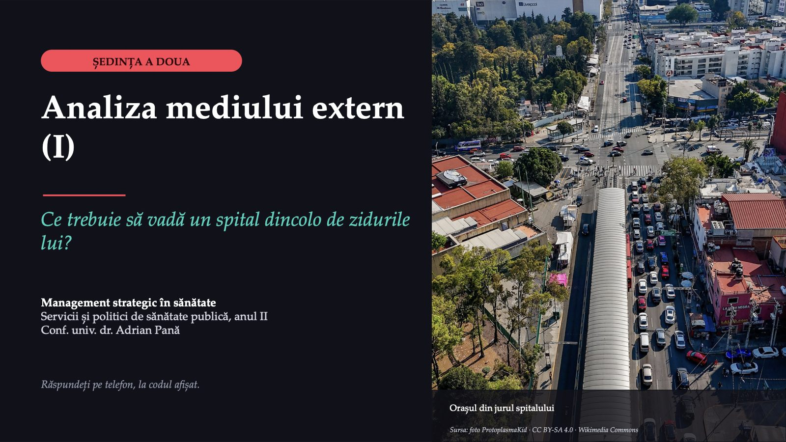
1 / 42Întrebarea ședinței este cea din titlu: ce trebuie să vadă un spital dincolo de zidurile lui?
Ce mi-ați spus
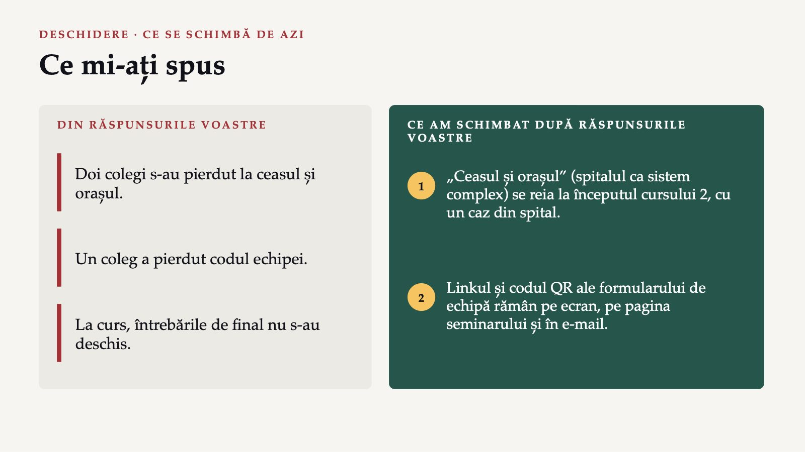
2 / 42La seminarul de săptămâna trecută, doi colegi au scris că s-au pierdut la exemplul cu ceasul și orașul, iar un coleg a pierdut codul pentru formarea echipei. La curs, întrebările de la final nu au mai apucat să se deschidă.
Spitalul nu este un ceas
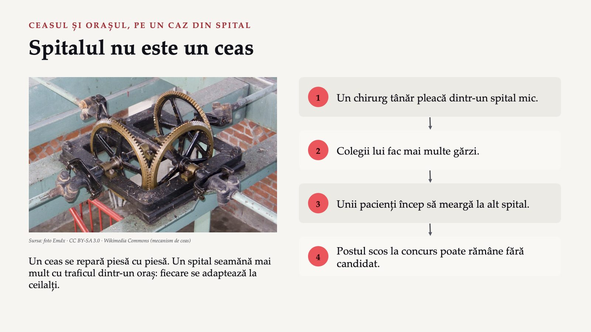
3 / 42Un ceas se repară piesă cu piesă; un spital seamănă mai mult cu traficul dintr-un oraș, în care fiecare se adaptează la ceilalți. Când un chirurg tânăr pleacă dintr-un spital mic, nu dispare o rotiță care se înlocuiește a doua zi.
Ce se schimbă de azi
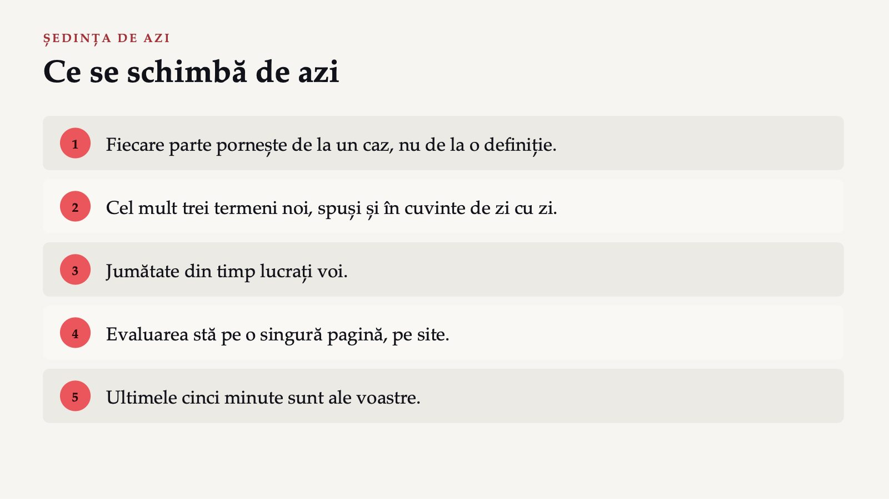
4 / 42Ce se schimbă de azi: fiecare parte a ședinței pornește de la un caz, nu de la o definiție; ședința are cel mult trei termeni noi, fiecare spus și în cuvinte de zi cu zi; jumătate din timp lucrați voi; evaluarea stă pe o singură pagină, pe site; ultimele cinci minute sunt ale voastre.
Ce trebuie să vadă un spital dincolo de zidurile lui?
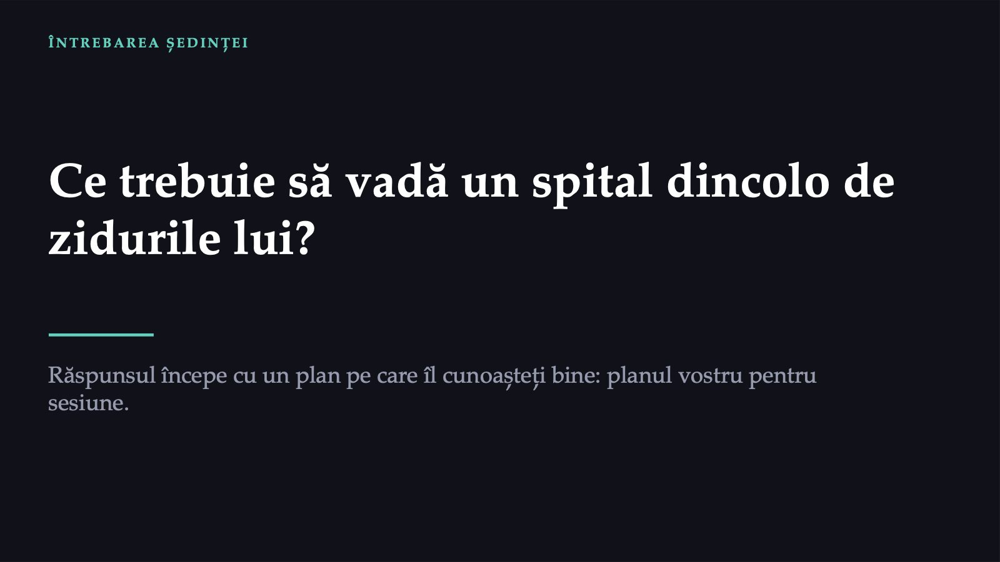
5 / 42Întrebarea ședinței este cea din titlu: ce trebuie să vadă un spital dincolo de zidurile lui? Răspunsul începe cu un plan pe care îl cunoașteți bine, planul vostru pentru sesiune.
Trei schimbări pe care nu le-ați hotărât voi
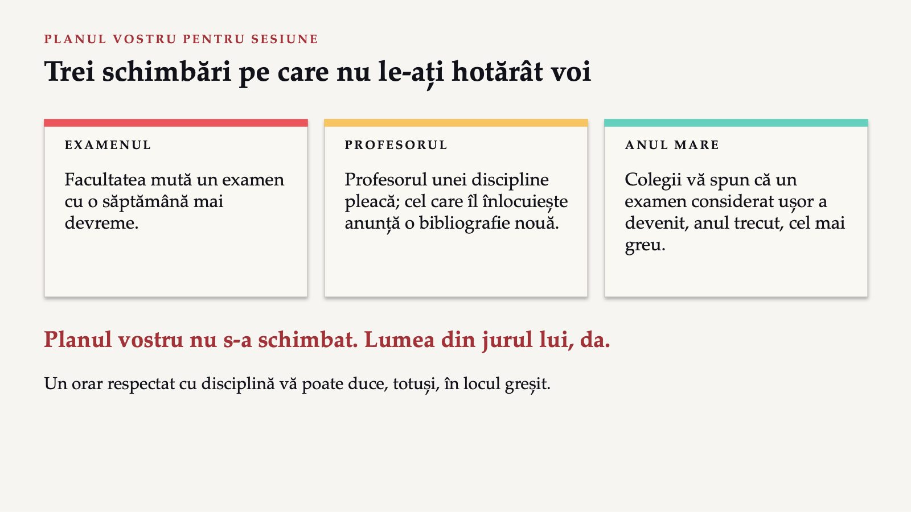
6 / 42Imaginați-vă că, la trei săptămâni după ce v-ați făcut orarul, se întâmplă trei lucruri pe care nu le-ați hotărât voi. Planul vostru nu s-a schimbat. Lumea din jurul lui, da.
Care schimbare vă strică cel mai mult planul?
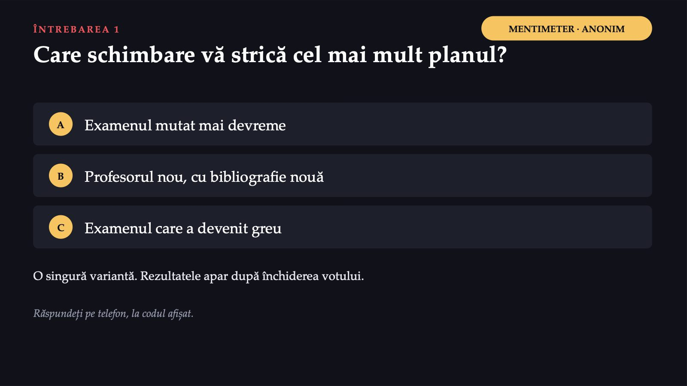
7 / 42Vot anonim pe telefon: care dintre cele trei schimbări vă strică cel mai mult planul? O singură variantă.
Planul se sprijină pe presupuneri despre viitor
 8 / 42
8 / 42Un spital, ca și studentul în sesiune, își face planurile pe baza unor presupuneri despre ce va urma. Una este arta, adică gândirea strategică. Cealaltă este știința, adică analiza riguroasă a mediului extern. Restul ședinței arată cum se face partea de știință într-un spital adevărat.
Ce s-a schimbat în ultimii ani în jurul spitalului din orașul vostru?
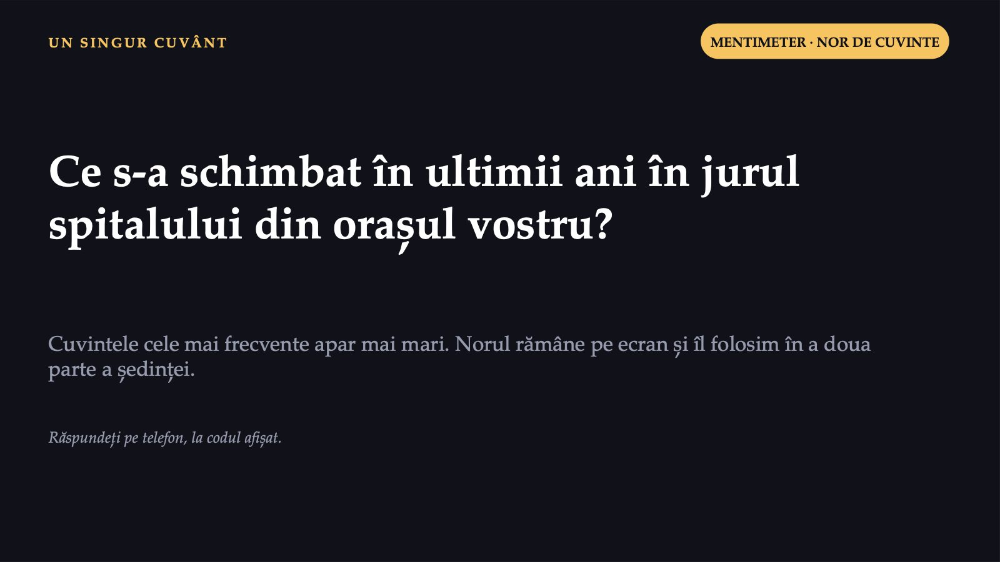
9 / 42Pe Mentimeter, un singur cuvânt: ce s-a schimbat în ultimii ani în jurul spitalului din orașul vostru? Schimbările din jurul unui spital sunt de mai multe feluri: unele privesc oamenii, altele medicii, altele banii, legile sau tehnologia.
Analiza mediului extern
![PRIMUL TERMEN NOU Analiza mediului extern Activitatea prin care se identifică, se adună și se interpretează problemele din afara unei organizații, ca să se stabilească ce înseamnă ele pentru organizație. În cuvinte de zi cu zi: a privi sistematic ce se schimbă în afara organizației și a hotărî ce contează pentru ea. A IDENTIFICA a observa schimbarea A ADUNA a pune laolaltă semnale din locuri diferite A INTERPRETA a spune ce înseamnă pentru organizația voastră Sursa: Ginter, Duncan și Swayne, 2018.](diapozitive/C02/010.jpg) 10 / 42
10 / 42În cuvinte de zi cu zi, analiza mediului extern înseamnă a privi sistematic ce se schimbă în afara organizației și a hotărî ce contează pentru ea. Definiția are trei verbe. A identifica înseamnă a observa schimbarea. A aduna înseamnă a pune laolaltă semnale venite din locuri diferite. A interpreta înseamnă a spune ce înseamnă pentru organizația voastră.
Primul pas: analiza situației
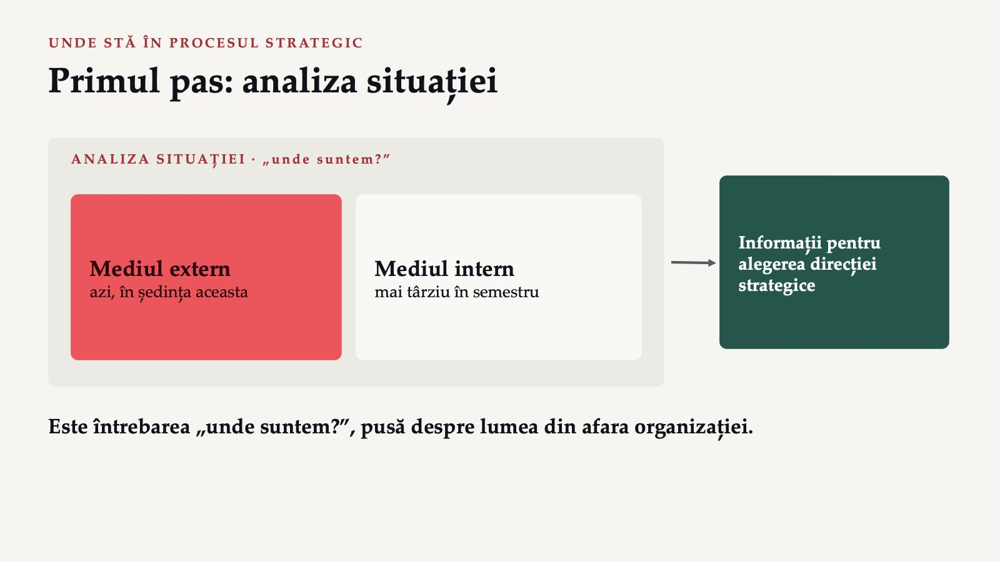
11 / 42Analiza mediului extern face parte din primul pas al procesului strategic din prima ședință, analiza situației. Este întrebarea „unde suntem?”, pusă despre lumea din afara organizației. Partea despre organizația însăși, analiza mediului intern, vine mai târziu în semestru.
Spitalul municipal dintr-un oraș mic
![CAZ CONSTRUIT PENTRU CURS Spitalul municipal dintr-un oraș mic Managerul cere fiecărui șef de secție să noteze o schimbare din afara spitalului. Pe birou ajung trei. Spitalul nu există; cele trei schimbări sunt reale. SEMNALUL 1 · MEDICINĂ INTERNĂ Pacienții internați sunt tot mai vârstnici, cu mai multe boli cronice. SEMNALUL 2 · CHIRURGIE Doi medici tineri au plecat. Postul scos la concurs nu a avut niciun candidat. SEMNALUL 3 · MEDIC DE FAMILIE Pacienții din comune renunță la consultații: drumul e lung și scump.](diapozitive/C02/012.jpg) 12 / 42
12 / 42Situația este construită pentru acest curs. Spitalul nu există, nu are nume și nu descrie o unitate reală. Cele trei schimbări din jurul lui sunt, în schimb, reale: fiecare este documentată în surse oficiale.
Care semnal intră primul în planul spitalului?
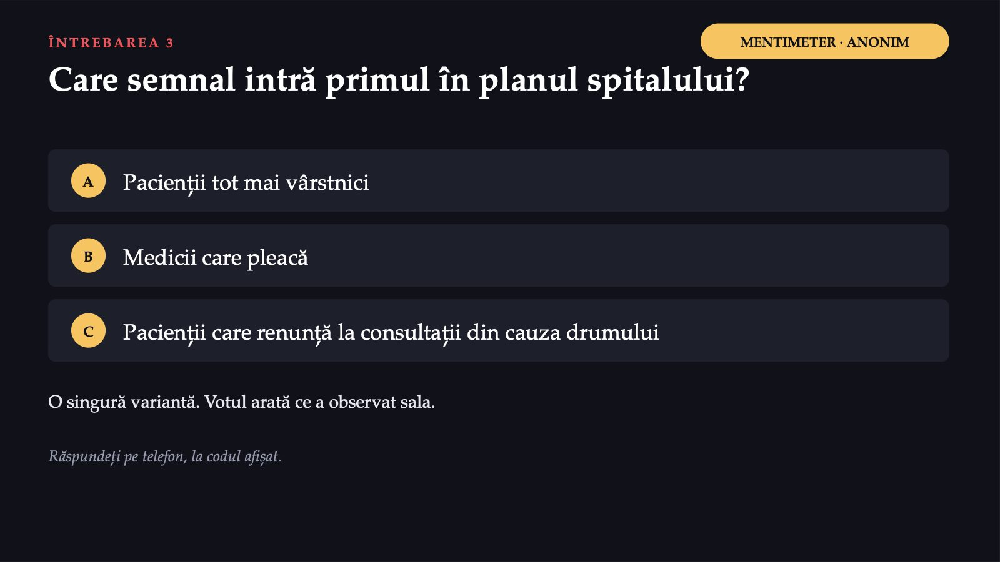
13 / 42Fiecare semnal are argumentele lui. Înainte de a alege, managerul are nevoie să afle două lucruri: dacă semnalul este real și cât de mare este schimbarea din spatele lui.
Un vârstnic la trei adulți, spre doi
![PRIMUL SEMNAL · PACIENȚII MAI VÂRSTNICI Un vârstnic la trei adulți, spre doi AZI Azi: un vârstnic la trei adulți SPRE 2050 Spre 2050: un vârstnic la doi adulți ■ adulți între 15 și 64 de ani ■ persoane de 65 de ani și peste Puțin peste un român din cinci are 65 de ani și peste. Pentru spital: mai mulți pacienți cu boli cronice, care au nevoie de urmărire, recuperare și îngrijire pe termen lung. Sursa: Eurostat, structura populației și proiecția de bază EUROPOP2025. Proiecțiile arată ce s-ar întâmpla dacă ipotezele s-ar confirma.](diapozitive/C02/014.jpg) 14 / 42
14 / 42Primul semnal, pacienții tot mai vârstnici, corespunde unei schimbări demografice a întregii țări. Astăzi, în România, la trei adulți între 15 și 64 de ani revine aproximativ un vârstnic. Până în 2050, raportul ar urma să ajungă la aproximativ un vârstnic la doi adulți.
Mai puțini medici decât media Uniunii Europene
 15 / 42
15 / 42Al doilea semnal, medicii care pleacă, are un corespondent în profilul de țară publicat în 2025 de OCDE împreună cu Observatorul European al Sistemelor și Politicilor de Sănătate. Lipsurile de personal sunt explicate, în mare parte, de plecarea atât a absolvenților noi, cât și a profesioniștilor cu experiență.
6 din 100
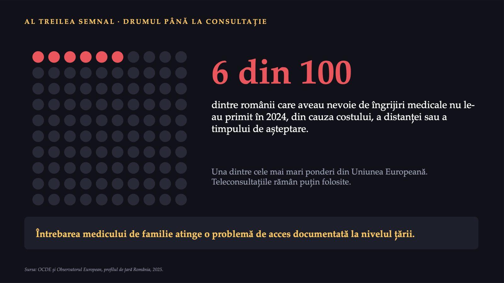
16 / 42Al treilea semnal, pacienții care renunță la consultații, are și el un corespondent. Întrebarea medicului de familie nu este, așadar, o idee izolată: atinge o problemă de acces documentată la nivelul țării.
O observație de pe secție devine o problemă cântărită
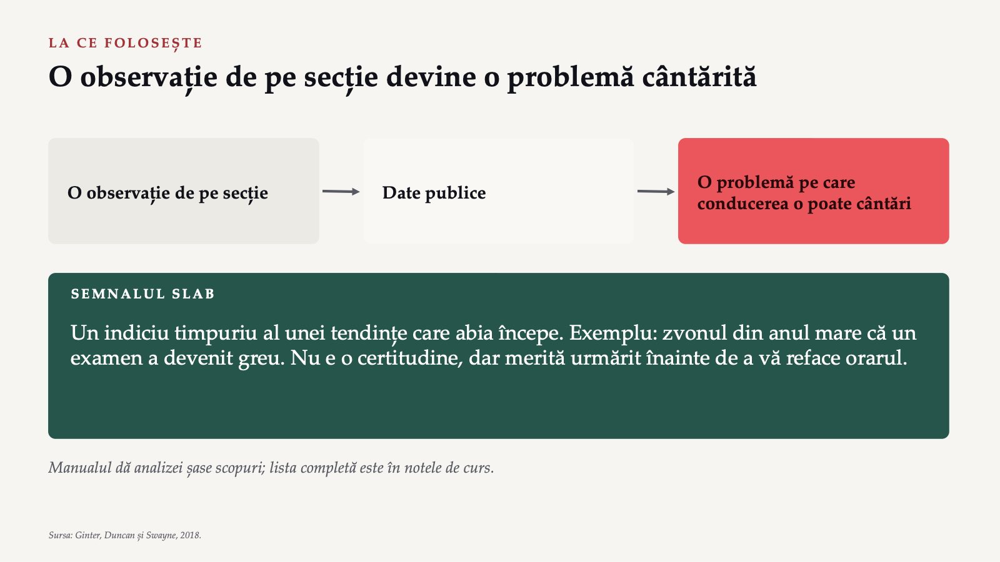
17 / 42Cele trei semnale au venit de la trei oameni diferiți, dar datele arată că fiecare face parte dintr-o schimbare mai mare. Acesta este primul folos al analizei mediului extern: o observație de pe o secție devine o problemă pe care conducerea o poate cântări. Un semnal slab este un indiciu timpuriu al unei tendințe care abia începe.
Problema strategică
![AL DOILEA TERMEN NOU Problema strategică O tendință, o evoluție, o dilemă sau un eveniment posibil din afara organizației, care o afectează pe ea și poziția ei. Adesea este neclară și ambiguă. În cuvinte de zi cu zi: o schimbare din afară care contează pentru viitorul organizației și pe care trebuie s-o înțelegeți înainte să hotărâți. „Problemă” nu înseamnă aici ceva rău. Îmbătrânirea populației este o problemă strategică pentru spital, dar poate fi și motivul unui compartiment de recuperare. Sursa: Ginter, Duncan și Swayne, 2018.](diapozitive/C02/018.jpg) 18 / 42
18 / 42Cele trei semnale nu sunt încă decizii. Ele sunt ceea ce manualul numește probleme strategice. Cuvântul „problemă” nu înseamnă aici ceva rău.
Nici oportunitate, nici amenințare, încă
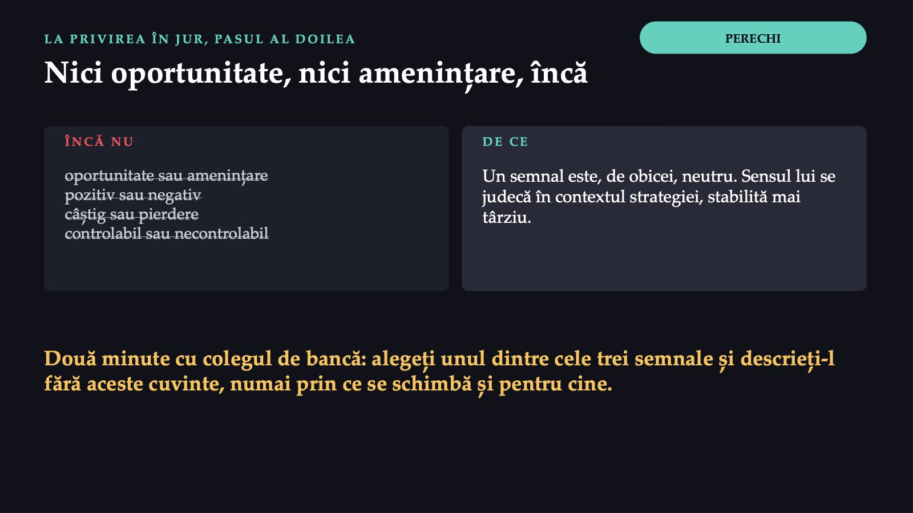
19 / 42Manualul face o recomandare care pare, la început, ciudată: la privirea în jur, conducătorii ar face bine să nu eticheteze schimbările drept oportunități sau amenințări și să se uite la consecințele schimbării înseși.
„România are cei mai mulți absolvenți de medicină din UE, dar tot nu are doctori suficienți”
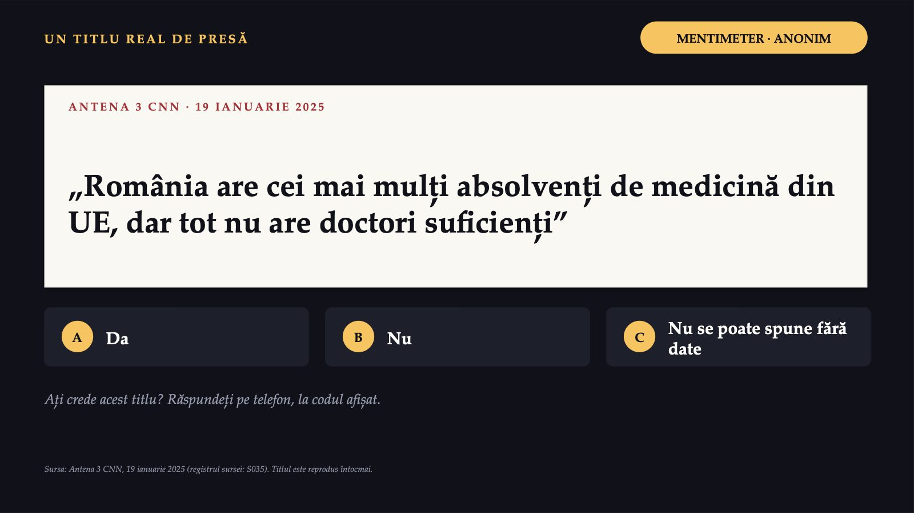
20 / 42Pe ecran apare un titlu real de presă, publicat de Antena 3 CNN la 19 ianuarie 2025. Titlul descrie cazul; cifrele se verifică în sursele oficiale.
Ce spun datele despre titlu
![CE SPUN DATELE Ce spun datele despre titlu PRIMA PARTE · EXAGERATĂ România pregătește mulți medici: al treilea nivel din Uniune al absolvenților de medicină raportat la populație, aproape dublu față de media europeană. Articolul însuși vorbește despre locul patru, nu despre primul. A DOUA PARTE · CU SPRIJIN REAL Medici la 1 000 de locuitori, 2023 România 3,7 Media UE 4,3 Plecarea medicilor și împărțirea inegală pe teritoriu rămân o problemă. Un spital mic este unul dintre locurile unde lipsa se poate simți puternic. Sursa: Antena 3 CNN, 19 ianuarie 2025 (S035); OCDE și Observatorul European, profilul de țară România, 2025.](diapozitive/C02/021.jpg) 21 / 42
21 / 42Datele publice spun ceva mai nuanțat. Prima parte a titlului exagerează. A doua parte are un sprijin real. Titlul pune alături un semnal real, lipsa de medici, și un superlativ pe care datele nu îl susțin.
Ce nu poate face analiza mediului extern
![LIMITELE ANALIZEI Ce nu poate face analiza mediului extern 1 Nu poate prezice viitorul. 2 Conducătorii nu pot vedea totul. 3 Informația potrivită e greu de obținut. 4 Între schimbare și interpretare poate trece timp. 5 Organizația nu reacționează întotdeauna destul de repede. LIMITA CEA MAI IMPORTANTĂ Convingerile puternice ale conducătorilor. Un manager convins că „medicii tineri pleacă oricum, nu avem ce face” nu va trece plecarea lor în plan. Reduce surpriza, nu o elimină: presupunerile se verifică periodic. Sursa: Ginter, Duncan și Swayne, 2018.](diapozitive/C02/022.jpg) 22 / 42
22 / 42Analiza mediului extern este necesară, dar manualul avertizează că nu garantează succesul și are limite practice. Manualul consideră că ultima limită este, probabil, cea mai importantă. Analiza mediului extern lasă decizia în seama judecății conducătorilor, dar o face mai puțin oarbă. Ea reduce surpriza, dar nu o elimină.
Zece minute de pauză
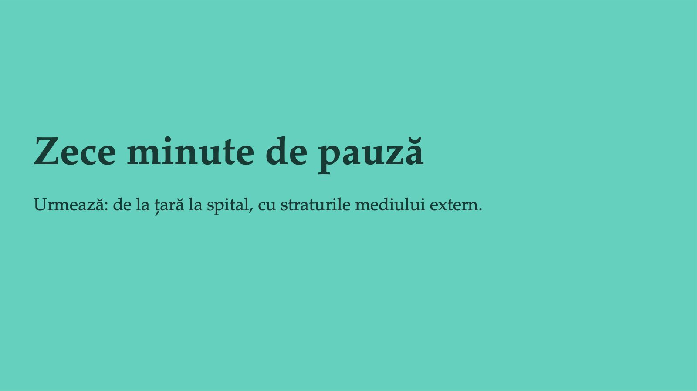
23 / 42Trei straturi, unul în interiorul celuilalt
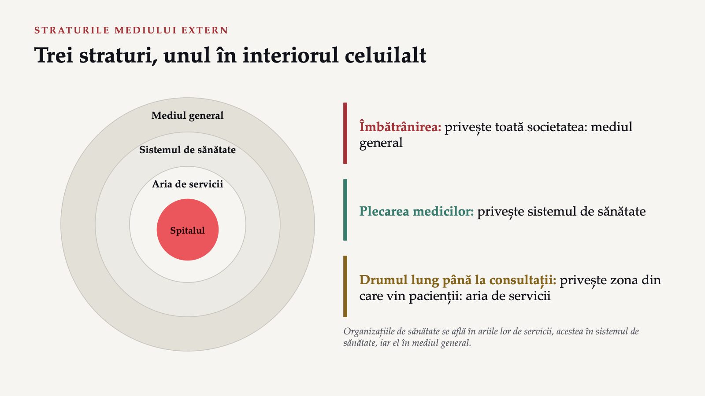
24 / 42Cele trei semnale din caz s-au produs în locuri diferite. Îmbătrânirea privește toată societatea. Plecarea medicilor privește sistemul de sănătate. Drumul lung până la consultații privește zona din care vin pacienții spitalului.
Mediul general
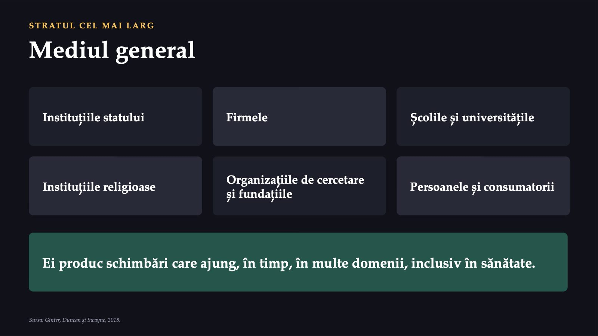
25 / 42Mediul general este stratul cel mai larg. În el, instituțiile statului, firmele, școlile și universitățile, instituțiile religioase, organizațiile de cercetare și fundațiile, precum și persoanele și consumatorii produc schimbări care ajung, în timp, în multe domenii, inclusiv în sănătate.
Sistemul de sănătate
![AL DOILEA STRAT Sistemul de sănătate 1 Organizațiile care planifică și reglementează 2 Organizațiile care furnizează servicii de sănătate 3 Organizațiile care furnizează resurse: școlile de medicină și plătitorii 4 Organizațiile care îi reprezintă pe furnizori 5 Oamenii implicați în îngrijire și pacienții ÎN ROMÂNIA Ministerul Sănătății Spitalele și cabinetele Universitățile de medicină Casele de asigurări de sănătate Colegiile profesionale Pacienții Sursa: Ginter, Duncan și Swayne, 2018: cinci segmente ale sistemului de sănătate.](diapozitive/C02/026.jpg) 26 / 42
26 / 42Sistemul de sănătate cuprinde organizațiile și oamenii implicați direct sau indirect în îngrijirea sănătății. Manualul îl împarte în cinci segmente. În România, exemplele sunt ușor de recunoscut: Ministerul Sănătății, spitalele și cabinetele, universitățile de medicină, casele de asigurări de sănătate, colegiile profesionale, pacienții.
Aria de servicii și organizația
![AL TREILEA STRAT ȘI CENTRUL Aria de servicii și organizația ARIA DE SERVICII Zona din care vin pacienții unei organizații și în care se află concurenții ei direcți. Granițele se stabilesc adesea subiectiv: istoricul pacienților, reputația, tehnologia, recunoașterea medicilor. Râurile Munții Autostrăzile cu puține ieșiri ORGANIZAȚIA Spitalul însuși. Nu face parte din mediul extern: este cea care îl analizează. Legea cere același lucru: planul de dezvoltare pornește de la serviciile medicale de care are nevoie populația din zona deservită. Sursa: Ginter, Duncan și Swayne, 2018; modelul-cadru al contractului de management.](diapozitive/C02/027.jpg) 27 / 42
27 / 42Aria de servicii este zona din care vin pacienții unei organizații și în care se află concurenții ei direcți. Organizația este, în centru, spitalul însuși; ea nu face parte din mediul extern, ci îl analizează.
Schimbarea coboară și urcă
![STRATURILE NU SUNT SEPARATE Schimbarea coboară și urcă DE SUS ÎN JOS Mediul general Populația îmbătrânește. Sistemul de sănătate Sunt necesare mai multe servicii pentru boli cronice și de recuperare. Aria de servicii Cresc internările vârstnicilor și cererea de controale. Organizația Spitalul își împarte altfel paturile, medicii și programul. DE JOS ÎN SUS Spitalul face controale la distanță: pacienții din comune nu mai merg la alt spital, iar alte spitale pot copia soluția. Sursa: Ginter, Duncan și Swayne, 2018, schimbarea între straturi; exemplele din prezentarea cursului.](diapozitive/C02/028.jpg) 28 / 42
28 / 42Straturile nu sunt separate. O schimbare produsă într-unul dintre ele se propagă, de regulă, în celelalte. Uneori, o schimbare atinge mai multe straturi deodată; prezentarea cursului dă ca exemple șocurile tehnologice și epidemiile.
Plecarea medicilor: problema cui?
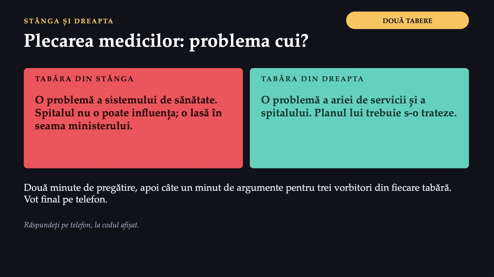
29 / 42Sala se împarte în două tabere. Ambele tabere au o parte de adevăr, iar dezbaterea arată de ce straturile se analizează separat. La nivelul sistemului, profilul de țară arată că păstrarea personalului din sănătate rămâne dificilă în fața salariilor mai mari și a condițiilor de lucru mai bune din alte țări ale Uniunii; un spital nu le poate schimba singur.
Cinci feluri de schimbare
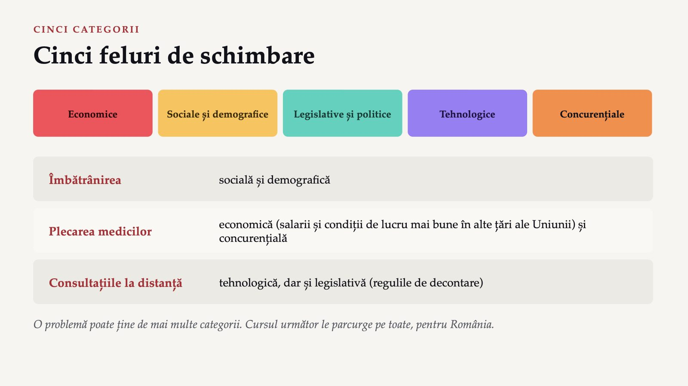
30 / 42Manualul grupează schimbările din fiecare strat în cinci categorii. Cele trei semnale din caz se așază ușor. O problemă poate ține de mai multe categorii, iar discuția despre categoria ei este, ea însăși, un exercițiu de gândire strategică. În cursul următor, aceste cinci categorii sunt parcurse una câte una pentru România.
Harta problemelor
![AL TREILEA TERMEN NOU Harta problemelor Tabelul în care o echipă scrie, în același loc și în aceeași ordine, tot ce s-a schimbat în jurul organizației. Mediul general Sistemul de sănătate Aria de servicii Economică plecarea medicilor spre salarii și condiții de lucru mai bune Socială și demografică îmbătrânirea populației Legislativă și politică Tehnologică consultațiile la distanță cerute de pacienții din comune Concurențială Sursa: Ginter, Duncan și Swayne, 2018 (issue map); semnalele sunt cele ale spitalului din caz.](diapozitive/C02/031.jpg) 31 / 42
31 / 42Dacă straturile mediului se scriu pe o latură a unui tabel, iar cele cinci categorii pe cealaltă, se obține instrumentul central al analizei mediului extern. În cuvinte de zi cu zi, harta problemelor este tabelul în care o echipă scrie, în același loc și în aceeași ordine, tot ce s-a schimbat în jurul organizației.
În ce strat scrieți fiecare semnal pe hartă?
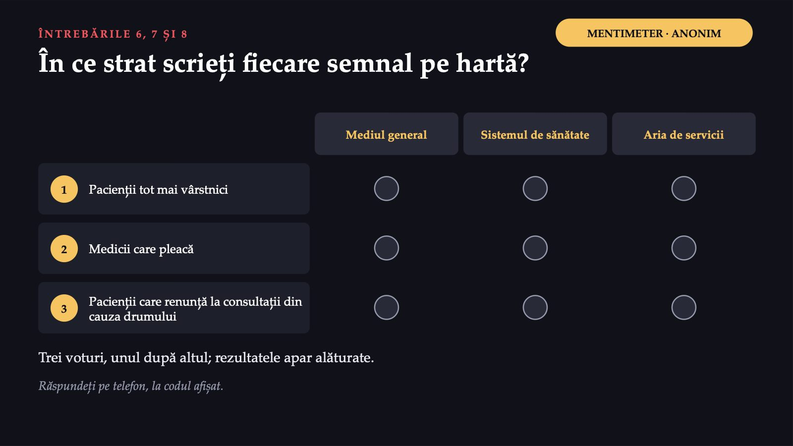
32 / 42Vot anonim pe telefon, pentru fiecare dintre cele trei semnale, pe rând: în ce strat l-ați scrie pe hartă? Îmbătrânirea populației ține de mediul general, stratul în care se produc schimbările sociale și demografice ale țării. Regula este ca echipa să știe de ce a ales căsuța și să nu amestece straturile.
De la semnal la problemă strategică
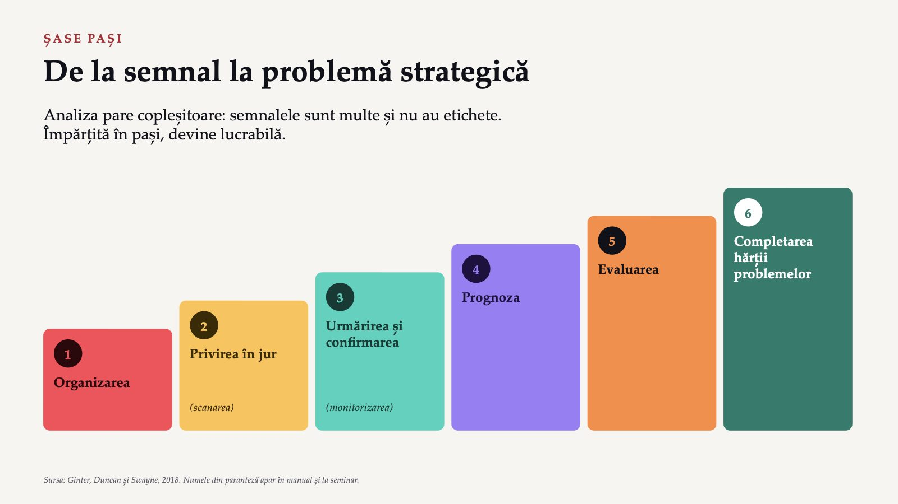
33 / 42Analiza mediului extern pare copleșitoare: semnalele sunt multe, vin din toate direcțiile și nu au etichete. Manualul o împarte, de aceea, în șase pași. În sală se folosesc mai ales cuvintele obișnuite.
Organizarea și privirea în jur
![PRIMII DOI PAȘI Organizarea și privirea în jur 1 · ORGANIZAREA Împărțiți mediul pe straturi și schimbările pe categorii; harta rămâne goală. Sfat al cursului: stabiliți cine face analiza și pe ce perioadă. 2 · PRIVIREA ÎN JUR Căutați tendințe în cele trei straturi și notați de unde le-ați aflat. Autorii îl consideră, probabil, cel mai important pas. SURSE PUBLICE INS, baza TEMPO spitale pe forme de proprietate Eurostat structura populației CNAS indicatori de performanță ai spitalelor publice Sursa: Ginter, Duncan și Swayne, 2018; INS TEMPO, Eurostat și CNAS.](diapozitive/C02/034.jpg) 34 / 42
34 / 42Primul pas: organizarea. Echipa împarte mediul extern pe straturi și schimbările pe categorii și pregătește harta problemelor, încă goală. Al doilea pas: privirea în jur. Pentru România, o parte din datele publice se găsesc în câteva locuri cunoscute.
Urmărirea, prognoza, evaluarea, harta
 35 / 42
35 / 42Al treilea pas: urmărirea și confirmarea. Al patrulea pas: prognoza. Proiecțiile alternative contează: un singur viitor „probabil” ascunde incertitudinea. Al cincilea pas: evaluarea. Al șaselea pas: completarea hărții problemelor.
Așteptarea pentru examenul RMN
![EXEMPLU CONSTRUIT · VALORI IPOTETICE Așteptarea pentru examenul RMN 2 Medicii de familie semnalează așteptări tot mai lungi pentru examenul prin rezonanță magnetică (RMN). 3 Așteptarea medie crește de la 20 la 30 de zile, în fiecare lună. 20 30 4 Dacă tendința continuă, cei cu nevoie de diagnostic rapid așteaptă mult peste ce permite starea lor. 5 Efect mare, probabil să continue. Cauze posibile: programul aparatului și cererea. 6 Pe hartă: aria de servicii, categoriile tehnologică și concurențială. Semn de schimbare: sub 15 zile, două luni la rând.](diapozitive/C02/036.jpg) 36 / 42
36 / 42Valori ipotetice. Exemplul arată ce face fiecare pas, dar și ce nu face. Analiza mediului extern nu alege încă soluția: prelungirea programului, un parteneriat cu un furnizor privat sau un aparat nou sunt opțiuni care vin mai târziu în procesul strategic, după analiza internă.
Concurs nou acum sau confirmăm întâi tendința?
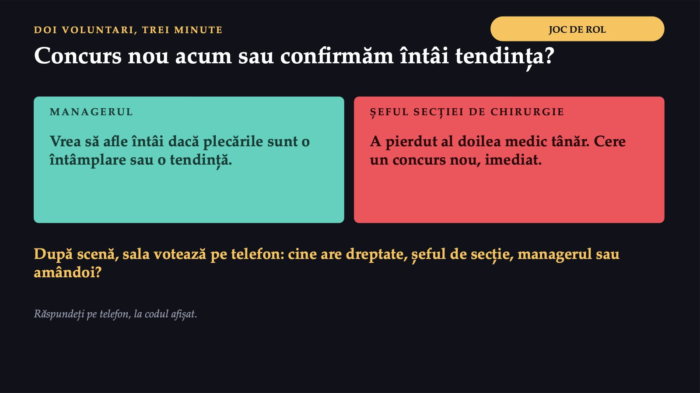
37 / 42Doi voluntari joacă o scenă de cel mult trei minute. Unul este managerul spitalului municipal din caz. Celălalt este șeful secției de chirurgie, care tocmai a pierdut al doilea medic tânăr. După scenă, sala votează pe telefon.
Ce se scrie într-o căsuță
![HARTA SE COMPLETEAZĂ ȘI SE REVEDE Ce se scrie într-o căsuță 1 Problema, în una–două propoziții 2 Dovezile, cu sursa și data 3 Implicațiile pentru organizație 4 Efectul și probabilitatea 5 Semnul după care schimbați concluzia PRESUPUNERILE SE VERIFICĂ PERIODIC • Tendințe noi ne-au afectat în rău? • Au apărut oportunități noi? • Strategia e acceptabilă pentru părțile interesate? • Evoluții tehnologice noi? • S-a schimbat mediul legislativ sau politic? Pe hartă nu intră nimic fără o sursă care poate fi găsită de altcineva. Sursa: Ginter, Duncan și Swayne, 2018; macheta căsuței este a prezentării cursului.](diapozitive/C02/038.jpg) 38 / 42
38 / 42Regula cea mai importantă este simplă: pe hartă nu intră nimic fără o sursă care poate fi găsită de altcineva. Harta problemelor nu se completează o dată pentru totdeauna. Manualul propune un set de întrebări pentru verificarea presupunerilor pe care se sprijină strategia.
Care este primul semnal din afara organizației voastre pe care l-ați scrie pe hartă?
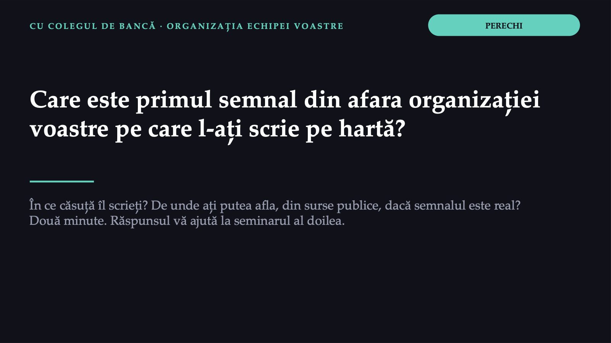
39 / 42Două minute cu colegul de bancă: gândiți-vă la organizația aleasă de echipa voastră la seminar. Care este primul semnal din afara ei pe care l-ați scrie pe harta problemelor și în ce căsuță?
Zece întrebări despre ideile ședinței
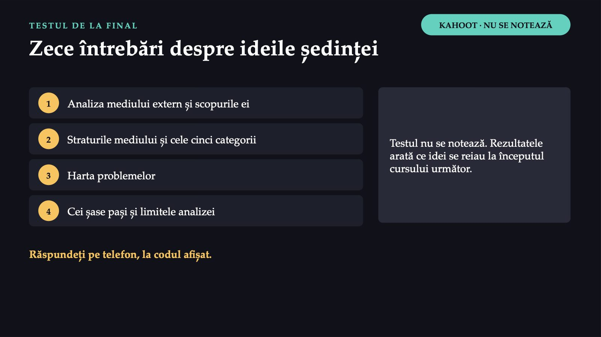
40 / 42Test formativ pe Kahoot, zece întrebări despre ideile ședinței. Testul nu se notează. Rezultatele arată ce idei trebuie reluate la începutul cursului următor.
Ce faceți diferit
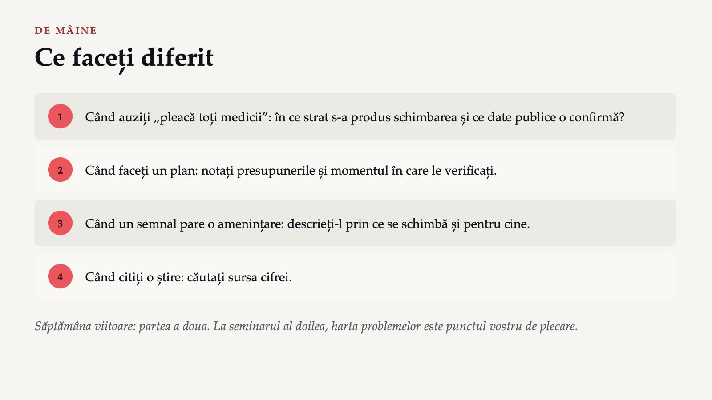
41 / 42Întrebarea din titlu are acum un răspuns mai complet. O strategie se sprijină pe presupuneri despre viitor, iar analiza mediului extern le face cât mai bine informate. Săptămâna viitoare, cursul despre analiza mediului extern continuă cu partea a doua.
Trei întrebări pentru final
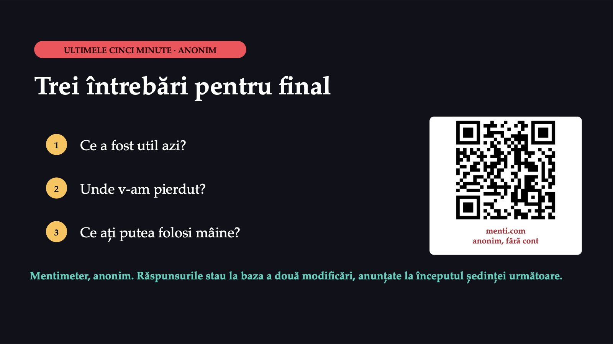
42 / 42Trei întrebări, anonim, pe Mentimeter, prin codul QR. Răspunsurile stau la baza a două modificări, anunțate la începutul ședinței următoare.
Săgeți sau spațiu: navigare · O: vedere de ansamblu · N: notele prezentatorului · F: ecran complet · Esc: închidere